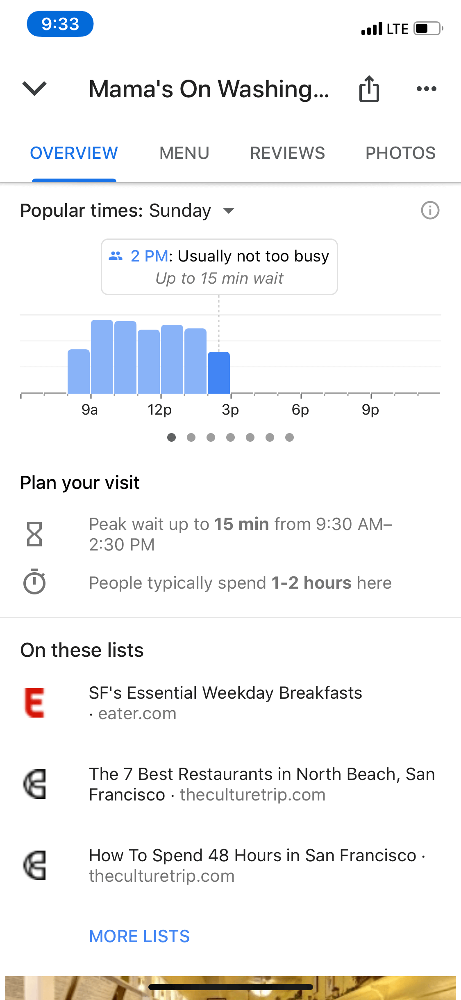
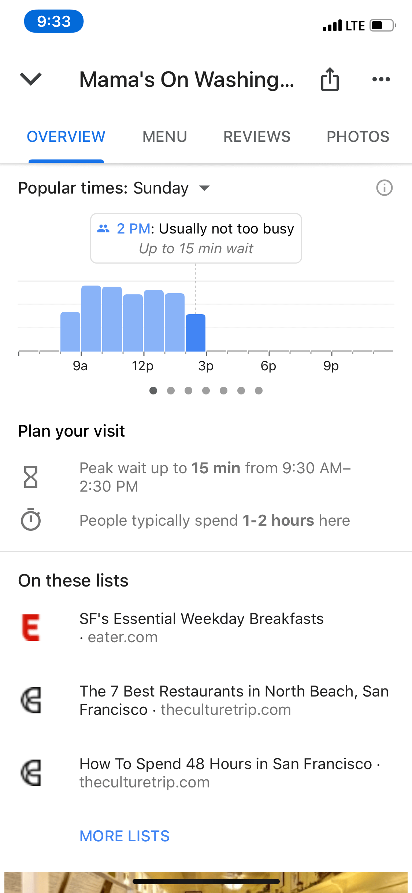

2018 — Lead Product Designer
Hopefully you're familiar with the above feature - Live Popular Times on Google. This was the next installment of that. Working closing with a motion designer and writer, I defined the UI and patterns you see below. The goal was to explore and integrate estimated wait times between local listings on Google Search and Maps.
We ultimately decided to evolve our Popular Times feature into a more interactive and robust product serving a series of visit data: Popular Times, Live Popular Times and estimated wait times.
This was a min-viable attempt to create a safe and simple yet scalable framework to handle more wait time data as Google's machine learning improved and local listing info becomes increasingly available through the various signals gathered over time. I designed the tooltip framework, supporting the various cases between live, historical, and estimated wait durations.
The sensitivity of this info was also to be considered, as well as how it played a role in decision making between parsing how busy a place was at that very time vs another day of the week. After rounds of research, we also found new ways to allow users to traverse between times as well as focus on the worst case scenario at a glance.
We learned that a new graph and visual take on it was not only too much work, but didn't align with data viz across the evolving Google ecosystem. Words were powerful and also misleading depending on how we articulated the wait of each place.
 
